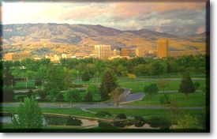

 These pages have been updated. The newest version is at http://boise.uidaho.edu. These pages will continue to function, displaying live data, but will not be maintained.
The Boise Center schedules courses from the Colleges of Education, Engineering and Forestry, Wildlife and Range Sciences. Our goal is to offer a consistent sequence of courses leading to advanced degrees and to help educators and other professionals meet certification requirements and remain current in skills and knowledge in educational administration, supervision, vocational teacher and adult education and other areas of academic concentration.
Off-campus education courses satisfy residency requirements and are offered in various communities for the student's convenience. Degree programs at the master's, educational specialist, and doctoral levels are available through the Boise Center. Persons interested in pursuing an Ed.D. or Ph.D. in Education with an emphasis in Educational Administration or Adult Education may compelete their residency requirements at the University of Idaho Boise Center. The division of Adult, Counselor, adn Technology Education offers a B.S. degree in Vocational Education. Certification requirements may be completed in vocational education, educational administration, and in special education administration.
A maximum of 12 non-matriculated, transfer, and/or correspondence credits may be applied to a master's or specialist degree from the UI. The acceptance of credits is contingent upon departmental approval.
Graduate students seeking a degree should apply AS SOON AS POSSIBLE for admission to the College of Graduate Studies through the University of Idaho Boise Center. We invite you to contact our office to indicate your interests and needs.